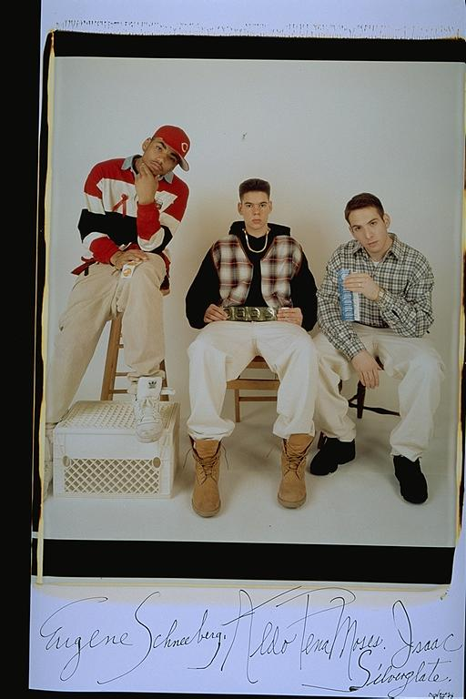

Aldo: This was a very exciting picture for us because we were doing some charity work that displayed on trains all over Boston. I was excited because I felt like I would be a minor, minor celebrity. Hey, the train station, it's a start, right. Also, since we were holding up condoms, we thought it was also a cool thing to be seen doing.
Eugene: "Condom Dispensers" -- Elsa asked us to take part in the "40 Ways to Fight Aids" Campaign. We volunteered to pose as "Condom Dispensers." I remember being a little bit uncomfortable about holding the condoms. But we tried to look smooth, nonetheless. I also remember feeling excited about seeing myself on the ad campaigns on the Orange Line of the MBTA.
Isaac: I was in a poster on the subway once. Were you? Didn't think so.
